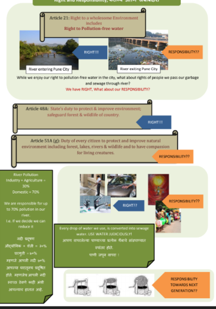

The above illustration depicts the condition of water flowing in the river before entering Pune and its condition towards the exit from Pune. As responsible citizen we must ensure that the water exiting from Pune is safe and not hazardous. The Indian constitution has set up certain acts and articles pertaining to the protection of the rivers.